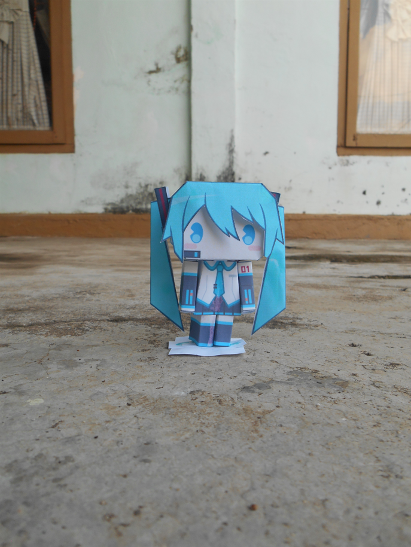
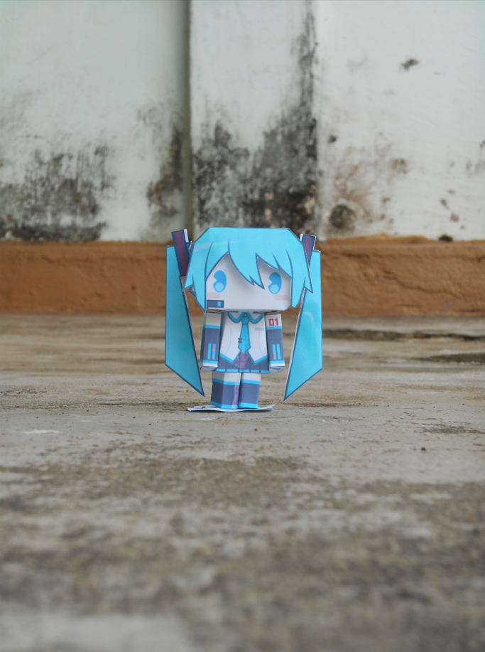
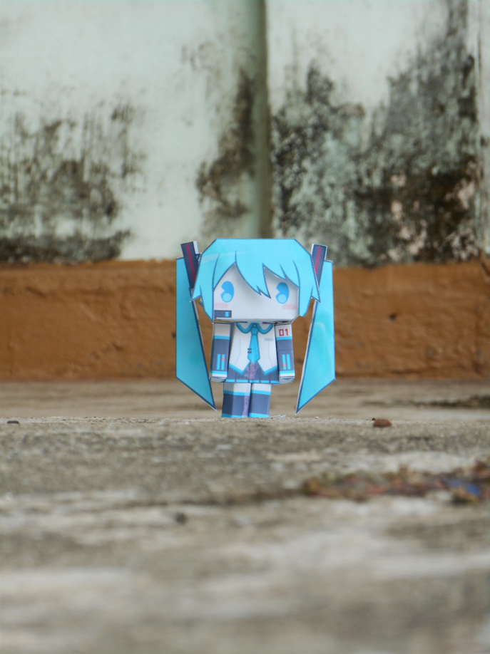

Terdapat banyak jenis lensa kamera seperti Wide, Ultrawide (no, it's not """""""0.5x"""""""), Telephoto dan sebagainya. Lalu apa bedanya? Note: Perhatikan bahwa focal length yang digunakan adalah focal length pada Full Frame atau Film 35mm
Lens Wide atau Lensa Lebar adalah lensa yang mampu menghasilkan gambar dengan sudut pandang yang lebar. Ciri lensa wide adalah focal lengthnya yang lebih pendek dari 50mm. Umumnya lensa ini digunakan untuk foto jarak dekat Kelebihan dari lensa wide adalah kemampuannya untuk menangkap gambar yang lebih luas walau difoto dari jarak dekat dan fokusnya merata karena depth of fieldnya yang lebih luas. Namun, lensa wide juga memiliki kekurangan yaitu menimbulkan distorsi perspektif.
Lens Ultrawide atau Lensa Sangat Lebar adalah lensa yang mampu menghasilkan gambar dengan sudut pandang yang lebar. Ciri lensa ultrawide adalah focal lengthnya yang sangat pendek, yaitu kurang dari 24mm. Umumnya lensa ini digunakan untuk foto jarak sangat dekat Kelebihannya kurang lebih sama dengan lensa wide, namun FOV Ultrawide jauh lebih luas daripada FOV lensa wide. Kekurangannya juga sama, yaitu menimbulkan distorsi perspektif.
Lens Telephoto adalah lensa yang memiliki panjang fisik lebih pendek daripada focal lengthnya. Lensa telefoto biasanya dipakai untuk foto jarak jauh, dan umumnya tidak digunakan untuk foto objek banyak karena sulit untuk memfokuskan semua objek pada gambar. Kelebihan dari lensa telefoto adalah kemampuannya untuk memotret gambar dari jarak yang jauh, kekurangannya adalah depth of field yang rapat (ini juga bisa jadi kelebihan).
Focal Length atau jarak fokus adalah ukuran jarak antara unsur lensa dengan sensor, jadi focal length adalah jarak dimana fokusnya berada. Focal Length yang panjang akan memperkecil sudut pandang dan objek akan tampak lebih besar, sebaliknya apabila focal lengthnya pendek maka sudut pandangnya akan menjadi besar dan objek akan tampak lebih kecil.
Penting : Ukuran Sensor akan memiliki "crop factor" yang berbeda, jadi sensor APS-C akan memiliki sudut pandang yang lebih kecil daripada sensor Full Frame. Maka foto yang dihasilkan akan memiliki pembesaran yang berbeda walau nilai focal length pada lensanya sama. (e.g 50mm APS-C sama dengan 80mm Full Frame)
Namun, semakin pendek focal length akan menimbulkan distorsi perspektif. Dikutip dari Makalah ITB, Dalam fotografi dan sinematografi, distorsi perspektif adalah pelengkungan atau transformasi objek dan area sekitarnya yang berbeda secara signifikan dari tampilan objek dengan panjang fokus normal, karena skala relatif dari fitur yang dekat dan jauh.
Panjang focal length yang memiliki distorsi rendah adalah >50mm, namun pada umumnya orang menggunakan 24-35mm sebagai ukuran focal length yang "normal"
Contohnya: Shot on Nikon Coolpix S3500 (1/2.3" sized sensor)
Focal Length (35mm eqv.) = 27,5mm | Sudut Pandang = 76 derajat 
Focal Length (35mm eqv.) = 76,9mm | Sudut Pandang = 31 derajat 
Focal Length (35mm eqv.) = 181,4mm | Sudut Pandang = 13 derajat 